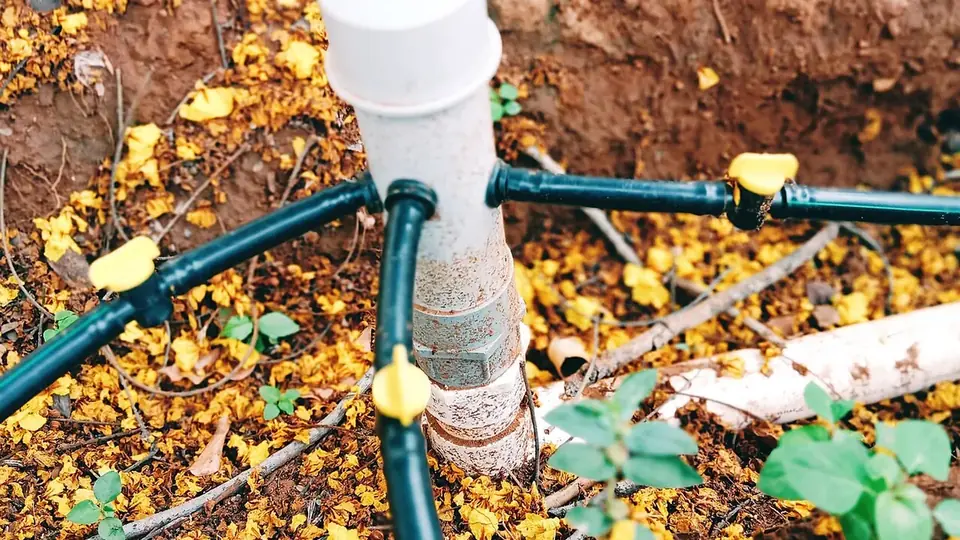

💧 55% तक सब्सिडी🗓️ खरीद से पहले मंज़ूरी ज़रूरी📍 पूरे भारत में, दरें राज्यवार
PMKSY ड्रिप सिंचाई सब्सिडी
PMKSY Per Drop More Crop — Drip & Sprinkler Subsidy
बाढ़ की तरह पानी देकर सिंचाई करने पर आधा पानी बर्बाद हो जाता है। PMKSY की Per Drop More Crop योजना ड्रिप-स्प्रिंकलर सेट पर 45% से 55% तक सब्सिडी देती है — पूरा गणित, पात्रता और आवेदन का तरीका।
✍️ Kunal Rajput — KrashiMitra⏱️ 9 मिनट पढ़ें📅 अगस्त 2026

भारत में ड्रिप सिंचाई — पानी सीधे जड़ तक, 40-60% तक बचत के साथ।
ड्रिप-स्प्रिंकलर पर सब्सिडी — पानी कम, पैदावार ज़्यादा
💧
55%
छोटे व सीमांत किसान की सब्सिडी
🌾
45%
अन्य किसानों की सब्सिडी
⚠️
मंज़ूरी पहले
खरीद से पहले स्वीकृति ज़रूरी
📖
भूमिका
खेत में पानी छोड़कर सिंचाई करने पर आधा पानी मेड़ों पर, नालियों में या ज़मीन में बहकर बर्बाद हो जाता है — और बिजली या डीज़ल का खर्च फिर भी पूरा लगता है। प्रधानमंत्री कृषि सिंचाई योजना (PMKSY) के "प्रति बूंद अधिक फसल" (Per Drop More Crop) हिस्से का मकसद यही है — ड्रिप और स्प्रिंकलर जैसी सूक्ष्म सिंचाई (micro-irrigation) पर सरकार सब्सिडी देती है, ताकि उतने ही पानी में ज़्यादा रकबा सींचा जा सके।
एक आम भ्रम पहले ही साफ़ कर देना ज़रूरी है — PMKSY और PM-KUSUM दो अलग-अलग योजनाएं हैं। PM-KUSUM सोलर पंप पर सब्सिडी देती है, जबकि PMKSY की यह योजना पंप से निकले पानी को ड्रिप या स्प्रिंकलर सेट के ज़रिए कम बर्बादी से खेत तक पहुंचाने पर सब्सिडी देती है — दोनों एक-दूसरे के साथ भी लगाए जा सकते हैं। इस लेख में सब्सिडी का पूरा गणित, पात्रता, ज़रूरी कागज़, आवेदन का सही रास्ता और ठगी से बचने के तरीके — आसान हिंदी में।
विज्ञापन
💧
PMKSY क्या है और सब्सिडी किस हिस्से से मिलती है?
PMKSY 2015 में दो लक्ष्यों के साथ शुरू हुई थी — "हर खेत को पानी" (सिंचाई का दायरा बढ़ाना) और "प्रति बूंद अधिक फसल" (जो पानी उपलब्ध है उसी में ज़्यादा पैदावार लेना)। सूक्ष्म सिंचाई यानी ड्रिप और स्प्रिंकलर सिस्टम पर मिलने वाली सब्सिडी इसी दूसरे हिस्से — Per Drop More Crop (PDMC) — के तहत आती है।
2021-22 से PMKSY का ढांचा बदल दिया गया है — अब यह राज्यों को दिए जाने वाले संसाधनों के ज़रिए लागू होती है, यानी हर राज्य का कृषि या उद्यान विभाग अपने यहां इसे लागू करता है, अपनी वार्षिक योजना बनाता है और आवेदन की प्रक्रिया भी राज्य-स्तर पर ही चलती है। योजना को 2026 तक बढ़ाया जा चुका है, जिसमें (सभी घटकों — सिंचाई क्षमता, हर खेत को पानी और सूक्ष्म सिंचाई — को मिलाकर) कुल परिव्यय लगभग ₹93,068 करोड़ रखा गया है, जिसमें केंद्र सरकार का हिस्सा करीब ₹37,454 करोड़ है।
💡
फल-सब्ज़ी और बागवानी फसलों के लिए आवेदन आमतौर पर उद्यान विभाग (Horticulture) से होता है, और गेहूं-कपास-गन्ना जैसी खेत की फसलों के लिए कृषि विभाग से। दोनों विभाग एक ही योजना, अलग-अलग फसल-समूहों के लिए चलाते हैं — अपने ब्लॉक/ज़िला कार्यालय में यह पहले ही पूछ लें।
💰
सब्सिडी का गणित — कितना पैसा वापस मिलता है?
केंद्र सरकार की तय दरें (राज्य इनमें अपनी तरफ से जोड़ सकते हैं, घटा नहीं सकते):
किसान की श्रेणी
सब्सिडी (यूनिट लागत पर)
छोटे व सीमांत किसान (2 हेक्टेयर तक ज़मीन)
55%
अन्य किसान
45%
पूर्वोत्तर व पहाड़ी राज्यों में यूनिट लागत का आधार
25% अधिक माना जाता है
जहां सूक्ष्म सिंचाई अभी कम फैली है, वहां यूनिट लागत का आधार
15% अधिक माना जाता है
केंद्र और राज्य के बीच खर्च का बंटवारा आमतौर पर सामान्य राज्यों में 60:40 और पहाड़ी/पूर्वोत्तर राज्यों में 90:10 रहता है — लेकिन किसान को इससे सीधा मतलब नहीं, किसान के लिए असली सवाल सिर्फ यह है कि उसे कुल लागत का कितना हिस्सा खुद देना है।
⚠️
ऊपर की दरें केंद्र सरकार की न्यूनतम गारंटी हैं, असली दर इससे ज़्यादा भी हो सकती है। कई राज्य अपने बजट से अतिरिक्त अनुदान जोड़ते हैं — उदाहरण के लिए उत्तर प्रदेश में उद्यान विभाग की सूक्ष्म सिंचाई योजना में किसान वर्ग के हिसाब से सब्सिडी 65% से 90% तक भी पहुंच जाती है। यानी असली दर सिर्फ राज्य ही नहीं, किसान की श्रेणी (सामान्य/लघु-सीमांत/अनुसूचित जाति-जनजाति) पर भी निर्भर करती है। अपने राज्य की सही और मौजूदा दर अपने ज़िला कृषि/उद्यान अधिकारी या नज़दीकी KVK से ही पक्की करें — यह हर साल और हर राज्य में बदलती है। कृषि मित्र न कोई विक्रेता है, न एजेंट — यह लेख सिर्फ जानकारी के लिए है।
🆚
PMKSY (सूक्ष्म सिंचाई) और PM-KUSUM में फर्क
नाम मिलते-जुलते होने और दोनों "सिंचाई" से जुड़े होने के कारण किसान अक्सर इन्हें एक ही योजना समझ लेते हैं — जबकि दोनों की सब्सिडी अलग चीज़ पर मिलती है:
बात
PMKSY — Per Drop More Crop
PM-KUSUM
सब्सिडी किस पर
ड्रिप/स्प्रिंकलर सेट (पानी की बचत)
सोलर पंप (बिजली/डीज़ल की बचत)
मंत्रालय
कृषि एवं किसान कल्याण मंत्रालय
नवीन एवं नवीकरणीय ऊर्जा मंत्रालय (MNRE)
सब्सिडी दर
45%–55% (राज्य अनुसार अधिक भी)
लगभग 60% (30% केंद्र + 30% राज्य)
क्या साथ लगा सकते हैं?
हां — सोलर पंप से निकला पानी ड्रिप/स्प्रिंकलर से देना ही सबसे कारगर तरीका है
विस्तार से PM-KUSUM सोलर पंप योजना वाला लेख देखें, अगर सवाल पंप और बिजली/डीज़ल के खर्च से जुड़ा है।
विज्ञापन
📊
किन फसलों में फायदा सबसे ज़्यादा दिखता है
सरकारी अध्ययनों के मुताबिक सूक्ष्म सिंचाई से आमतौर पर 40–50% तक पानी की बचत होती है और 20–30% तक पैदावार बढ़ने की संभावना रहती है — पर यह फसल, मिट्टी और सिंचाई के पुराने तरीके पर निर्भर करता है।
सिस्टम
सबसे उपयुक्त फसलें
ड्रिप सिंचाई
कतार में दूर-दूर बोई जाने वाली फसलें — गन्ना, कपास, फल-बाग (आम, अंगूर, अनार, केला), सब्ज़ियां
स्प्रिंकलर सिंचाई
घनी बोई जाने वाली फसलें — गेहूं, चना, मूंगफली, तिलहन, चारा फसलें
💡
सरकार के मुताबिक 2015 से अब तक देशभर में करीब 83 लाख हेक्टेयर खेत सूक्ष्म सिंचाई के दायरे में आ चुका है। जिस इलाके में पहले से यह सिस्टम आम है, वहां अपने किसी पड़ोसी खेत में इसे चलते देखकर फ़ैसला लेना सबसे भरोसेमंद तरीका है।
✅
पात्रता और ज़रूरी कागज़
कोई भी किसान आवेदन कर सकता है — अकेले, किसान समूह, FPO या सहकारी समिति के रूप में भी। ज़मीन के आकार की कोई सख्त ऊपरी सीमा नहीं है, पर बुनियादी शर्त यह है कि खेत में पानी का पक्का स्रोत (बोरवेल, कुआं, नहर, तालाब) होना चाहिए — सूखते या अनिश्चित स्रोत पर सिस्टम लगाना पैसे की बर्बादी है।
कागज़
क्यों ज़रूरी है
आधार कार्ड
पहचान और पंजीकरण के लिए
ज़मीन के कागज़ (खसरा/खतौनी/जमाबंदी/7-12, हाल की प्रति)
खेत और रकबा साबित करने के लिए
बैंक पासबुक
सब्सिडी DBT से सीधे खाते में आने के लिए
पानी के स्रोत का प्रमाण
बोरवेल/कुएं/नहर की जानकारी — सिस्टम का डिज़ाइन इसी पर तय होता है
अनुमोदित (empanelled) विक्रेता का कोटेशन
अनुमोदित सूची से बाहर के विक्रेता पर सब्सिडी नहीं मिलती
जाति/श्रेणी प्रमाण-पत्र (यदि लागू)
कुछ राज्यों में अतिरिक्त अनुदान के लिए
✍️
आवेदन का सही रास्ता — कदम दर कदम
पहले ब्लॉक/ज़िला कृषि या उद्यान कार्यालय से बात करें: आपकी फसल किस विभाग के दायरे में आती है और इस साल पंजीकरण खुला है या नहीं — यह पहला और सबसे ज़रूरी कदम है।
राज्य के पोर्टल पर ऑनलाइन आवेदन करें: हर राज्य की अपनी वेबसाइट है — जैसे उत्तर प्रदेश में उद्यान विभाग का dbt.uphorticulture.in पोर्टल, गुजरात का ikhedut पोर्टल (एजेंसी: GGRC), महाराष्ट्र का MahaDBT पोर्टल, आंध्र प्रदेश-तेलंगाना में APMIP। अपने राज्य के नाम के साथ "कृषि/उद्यान विभाग पोर्टल" खोजकर सही वेबसाइट पहचानें, या दफ़्तर से पूछें।
मंज़ूरी (पूर्व-स्वीकृति) का इंतज़ार करें — खरीद बाद में: लगभग हर राज्य में नियम एक जैसा है — पहले आवेदन मंज़ूर होता है, तभी सिस्टम खरीदें। मंज़ूरी से पहले खरीदी गई सिस्टम पर सब्सिडी मिलने की गारंटी नहीं रहती।
अनुमोदित विक्रेता से ही सिस्टम लगवाएं: विभाग की सूची में शामिल कंपनी/डीलर से कोटेशन लें और वही सिस्टम लगवाएं जो मंज़ूर हुआ है।
स्थापना के बाद भौतिक सत्यापन (verification): कृषि/उद्यान विभाग का अधिकारी खेत पर आकर सिस्टम की जांच करता है, उसी के बाद भुगतान की प्रक्रिया शुरू होती है।
सब्सिडी सीधे बैंक खाते में (DBT): सत्यापन पूरा होने पर सब्सिडी की राशि सीधे किसान के आधार-लिंक्ड बैंक खाते में जमा होती है।
🚨
ठगी से बचें
"रजिस्ट्रेशन फीस" या "मंज़ूरी जल्दी दिलाने" के नाम पर फोन कॉल से बचें: कोई भी सरकारी योजना फोन पर पैसे नहीं मांगती।
वेबसाइट का पता ध्यान से देखें: ".gov.in" या राज्य सरकार की आधिकारिक साइट ही भरोसेमंद है। मिलते-जुलते नाम वाली निजी वेबसाइटें सिर्फ डेटा इकट्ठा करती हैं।
मंज़ूरी से पहले किसी विक्रेता को एडवांस न दें: बिना सरकारी मंज़ूरी के भुगतान करने पर सब्सिडी और पैसा, दोनों डूब सकते हैं।
अनुमोदित विक्रेता की सूची विभाग से ही लें, किसी एजेंट के बताए नाम पर भरोसा न करें।
हर भुगतान की रसीद और आवेदन संख्या संभालकर रखें — स्थिति देखने और शिकायत करने, दोनों में यही काम आती है।
🚫
ये गलतियाँ कभी न करें
मंज़ूरी से पहले सिस्टम खरीद लेना — सबसे आम गलती। बिना पूर्व-स्वीकृति के खरीदी गई सिस्टम पर सब्सिडी अटक सकती है।
कमज़ोर पानी के स्रोत पर आवेदन करना — सूखते बोरवेल पर लगा ड्रिप सिस्टम आधा साल भी ठीक से नहीं चलता।
फ़िल्टर की सफ़ाई न करना — मिट्टी-कचरा जमा होने से ड्रिपर बंद हो जाते हैं और पूरे सिस्टम का फायदा घट जाता है।
मिट्टी और फसल के हिसाब से डिज़ाइन न करवाना — गलत स्पेसिंग या दबाव (pressure) से पानी बराबर नहीं बंटता।
वारंटी कार्ड और बिल न लेना — खराबी आने पर मुफ्त सर्विस इसी से मिलती है।
फर्टिगेशन (सिंचाई के साथ खाद) का मौका न इस्तेमाल करना — ड्रिप सिस्टम लगाने के बाद घुलनशील खाद साथ देने से खाद की भी काफ़ी बचत होती है।
✅
निष्कर्ष
तीन बातें याद रखें: PMKSY पानी बचाने की सब्सिडी है, PM-KUSUM पंप की — दोनों अलग हैं; छोटे-सीमांत किसान को 55% और बाकी को 45% न्यूनतम सब्सिडी मिलती है, राज्य इसे बढ़ा सकते हैं; और सिस्टम हमेशा मंज़ूरी के बाद, अनुमोदित विक्रेता से ही खरीदें। दरें और आवेदन की प्रक्रिया हर राज्य और हर साल बदलती है, इसलिए अंतिम फ़ैसला लेने से पहले अपने ज़िला कृषि/उद्यान कार्यालय से ज़रूर बात करें।
जितना पानी बचेगा, उतना ही रकबा और सींचा जा सकेगा — यही "प्रति बूंद अधिक फसल" का असली मतलब है।
विज्ञापन
❓
अक्सर पूछे जाने वाले सवाल
1PMKSY में ड्रिप सिंचाई पर कितनी सब्सिडी मिलती है?
केंद्र सरकार की न्यूनतम दर छोटे व सीमांत किसानों (2 हेक्टेयर तक) के लिए 55% और अन्य किसानों के लिए 45% है — यह यूनिट लागत पर मिलती है। कई राज्य अपनी तरफ से अतिरिक्त अनुदान जोड़ते हैं — जैसे उत्तर प्रदेश में यह किसान वर्ग के हिसाब से 65% से 90% तक भी पहुंच जाती है — सटीक दर अपने ज़िला कृषि/उद्यान कार्यालय से पक्की करें।
2PMKSY और PM-KUSUM में क्या फर्क है?
PMKSY सब्सिडी ड्रिप/स्प्रिंकलर सेट यानी पानी की बचत पर मिलती है, जबकि PM-KUSUM सब्सिडी सोलर पंप यानी बिजली-डीज़ल की बचत पर मिलती है — दोनों अलग मंत्रालयों की अलग योजनाएं हैं और साथ भी लगाई जा सकती हैं।
3ड्रिप सिंचाई सब्सिडी के लिए आवेदन कहां करें?
आवेदन राज्य के कृषि या उद्यान विभाग के पोर्टल से होता है — फल-सब्ज़ी वाली फसलों के लिए आमतौर पर उद्यान विभाग और खेत की फसलों के लिए कृषि विभाग। कुछ राज्यों की अपनी समर्पित एजेंसी भी है, जैसे गुजरात में GGRC (ikhedut पोर्टल) या आंध्र प्रदेश-तेलंगाना में APMIP। सही वेबसाइट अपने ब्लॉक/ज़िला कार्यालय से कन्फ़र्म करें।
4सब्सिडी के लिए कौन पात्र है?
कोई भी किसान — व्यक्तिगत, किसान समूह, FPO या सहकारी समिति — आवेदन कर सकता है, बशर्ते खेत में पानी का पक्का स्रोत (बोरवेल, कुआं, नहर या तालाब) मौजूद हो। ज़मीन के आकार की कोई सख्त ऊपरी सीमा नहीं है, पर सब्सिडी सिर्फ उतने रकबे पर मिलती है जितना पानी का स्रोत सींच सकता है।
5सिस्टम खरीदने से पहले क्या मंज़ूरी ज़रूरी है?
हां — लगभग हर राज्य में पहले आवेदन मंज़ूर होना ज़रूरी है, तभी सिस्टम खरीदें। मंज़ूरी से पहले खरीदी गई सिस्टम पर सब्सिडी मिलने की गारंटी नहीं रहती, इसलिए यह सबसे आम और सबसे महंगी गलती है जिससे बचना चाहिए।
6किन फसलों में ड्रिप या स्प्रिंकलर लगाना फायदेमंद है?
ड्रिप सिंचाई गन्ना, कपास, फल-बाग और सब्ज़ियों जैसी दूर-दूर बोई फसलों में ज़्यादा फायदा देती है, जबकि स्प्रिंकलर गेहूं, चना, मूंगफली जैसी घनी बोई फसलों के लिए बेहतर है। सरकारी अध्ययनों के मुताबिक सूक्ष्म सिंचाई से आमतौर पर 40–50% तक पानी बचता है और 20–30% तक पैदावार बढ़ सकती है।
7सब्सिडी की राशि कैसे और कब मिलती है?
सिस्टम स्थापित होने के बाद कृषि/उद्यान विभाग का अधिकारी खेत पर भौतिक सत्यापन करता है, और उसके बाद सब्सिडी की राशि सीधे किसान के आधार-लिंक्ड बैंक खाते में (DBT से) जमा होती है। इसमें लगने वाला समय राज्य और विभाग के कार्यभार पर निर्भर करता है।
8क्या सोलर पंप और ड्रिप सिंचाई की सब्सिडी एक साथ मिल सकती है?
हां — PM-KUSUM (सोलर पंप) और PMKSY (ड्रिप/स्प्रिंकलर) दोनों की सब्सिडी अलग-अलग है और एक साथ ली जा सकती है, क्योंकि दोनों योजनाएं अलग चीज़ों पर लागू होती हैं। बल्कि सोलर पंप से निकले पानी को ड्रिप या स्प्रिंकलर से देना ही सबसे कारगर तरीका माना जाता है, जिससे बिजली और पानी दोनों की बचत होती है।
🌾
KrashiMitra.in — आपका विश्वसनीय कृषि साथी
मंडी भाव, सरकारी योजनाएं, बीज-खाद की जानकारी और फसल रोग उपचार — सब कुछ हिंदी में।